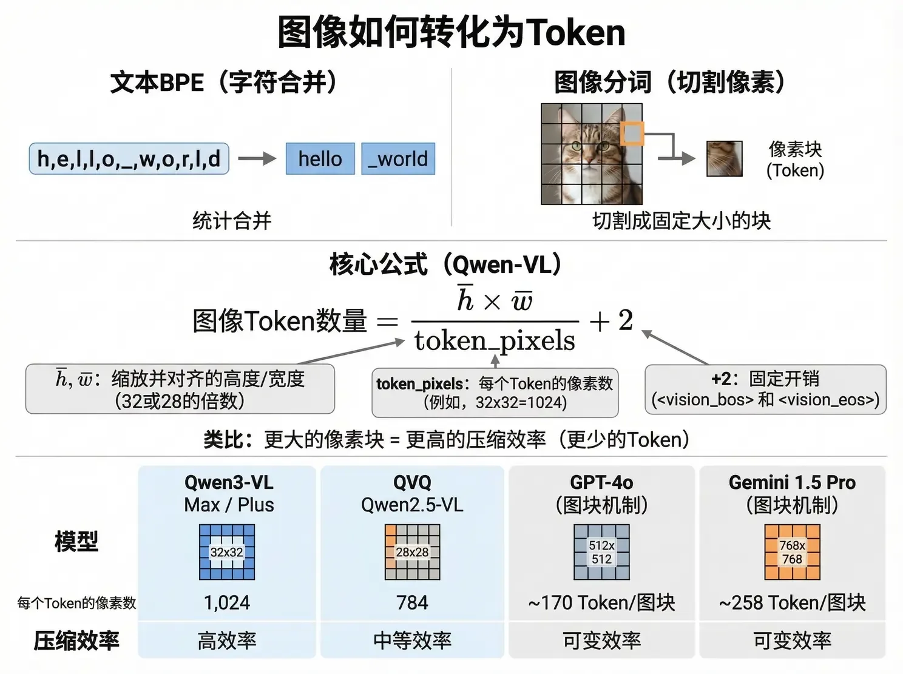
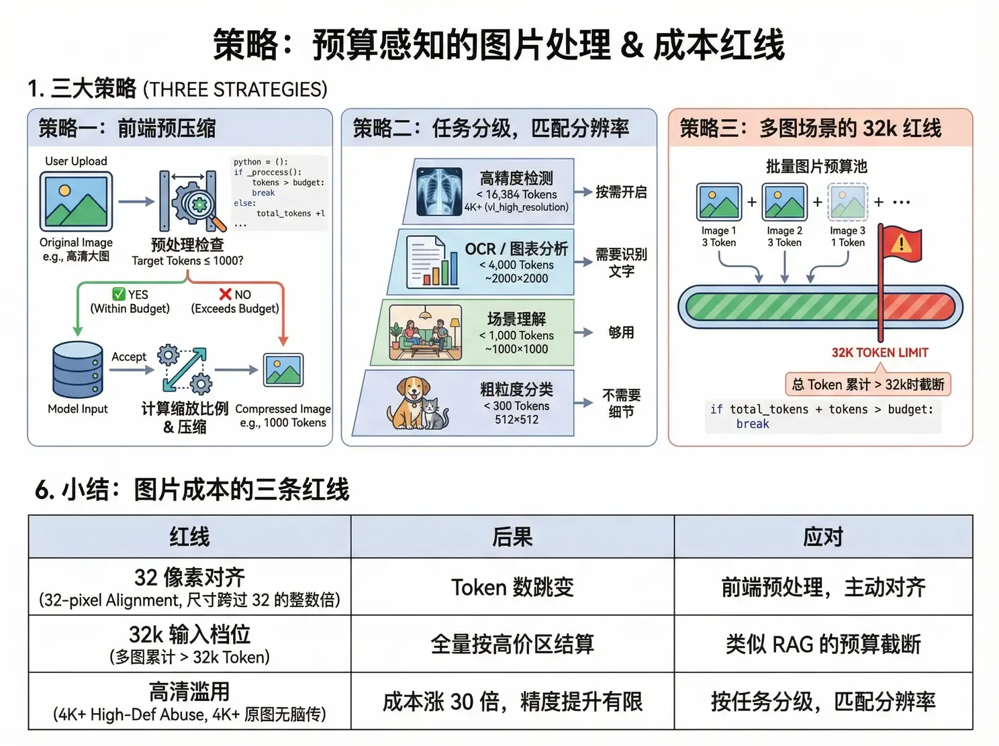

圖片 Token：畫素也要交稅
文字 BPE 是「合併字元」，圖片編碼是「切割畫素」。你以為傳的是原圖，其實模型按縮放對齊後的解析度計費——這裡面藏著和文字 32k 紅線一模一樣的跳檔陷阱。
視覺模型把圖片切成固定大小的畫素塊，每塊對應一個 Token。以通義千問 VL 為例，核心公式是：
| 變數 | 含義 | 說明 |
|---|---|---|
| h̄ / w̄ | 縮放後的高與寬 | 會被強制對齊到 32（或 28）的整數倍 |
| token_pixels | 每個 Token 對應的畫素數 | Qwen3-VL 是 32×32=1,024；QVQ / Qwen2.5-VL 是 28×28=784 |
| +2 | 固定開銷 | 視覺起止標記 <vision_bos> 和 <vision_eos> |
GPT-4o 和 Gemini 用的是圖塊（Tile）機制：GPT-4o 每個 512×512 圖塊約 170 Token，Gemini 1.5 Pro 每個 768×768 圖塊約 258 Token。類比理解：文字的詞表大小決定壓縮率，圖片的畫素塊大小決定壓縮率——32×32 比 28×28 更省。

選一個常見解析度，或者自己拖寬高。注意 1000×1000 和 1025×1025 這對「孿生陷阱」。計費假設：Qwen3-VL，token_pixels = 1,024，輸入價 1 元/M（32k 內標準檔）。
傳 4K 圖是不是比 1080p 效果更好？不一定，而且大機率不值。
| 解析度 | 縮放後（32 對齊） | Token 數 | 相對成本 |
|---|---|---|---|
| 512 × 512 | 512 × 512 | 258 | 1x |
| 1080p (1920×1080) | 1920 × 1088 | 2,042 | 7.9x |
| 2K (2560×1440) | 2560 × 1440 | 3,602 | 14x |
| 4K (3840×2160) | 3840 × 2176 | 8,162 | 31.6x |
| 8K (7680×4320) | 觸發縮放上限 | ~16,384 | 63.5x |
從 512 到 1080p，Token 漲 8 倍，識別精度有明顯提升；從 2K 到 4K，Token 再漲一倍，精度提升可能肉眼不可見。你以為在為「更清晰」付費，實際上在為「更多畫素塊」付費——而這些多出來的畫素塊，對模型理解內容的幫助是遞減的。研究表明 VLM 的視覺 Token 冗餘高達 85%。
| 任務型別 | Token 預算 | 對應解析度 | 理由 |
|---|---|---|---|
| 粗粒度分類（貓還是狗） | < 300 | 512 × 512 | 不需要細節 |
| 場景理解（圖裡在幹什麼） | < 1,000 | ~1000 × 1000 | 夠用 |
| OCR / 圖表分析 | < 4,000 | ~2000 × 2000 | 需要識別文字 |
| 高精度檢測（醫療影像） | < 16,384 | 4K+ | 按需開啟 vl_high_resolution_images |
落地動作有三個：前端預壓縮（上傳前把圖片壓到目標 Token 數以內，卡住解析度紅線）、任務分級（按上表匹配，別拿 4K 做分類）、多圖預算池（批次圖片累計 Token 接近 32k 就截斷，邏輯和上一節的 RAG 預算截斷完全一致）。

| 紅線 | 閾值 | 後果 | 應對 |
|---|---|---|---|
| 32 畫素對齊 | 尺寸跨過 32 的整數倍 | Token 數跳變 | 前端預處理，主動對齊 |
| 32k 輸入檔位 | 多圖累計 > 32k Token | 全量按高價區結算 | 類似 RAG 的預算截斷 |
| 高畫質濫用 | 4K+ 原圖無腦傳 | 成本漲 30 倍，精度提升有限 | 按任務分級，匹配解析度 |
圖片按縮放對齊後的解析度計費，不是按你傳的原圖。公式：(h̄×w̄)/token_pixels + 2。
高解析度的收益遞減：4K 比 1080p 貴 4 倍，理解能力未必更好。按任務分級匹配解析度。
多圖場景做預算池：累計接近 32k 就截斷或壓縮，別讓第 5 張圖把整單拖進高價區。
內容來源：整理自作者團隊內部分享《AI Token 降本增效策略分享》「圖片 Token 的計費機制」。官方規則見阿里雲百鍊視覺理解文件；「解析度詛咒」的學術來源見 CARES 論文。